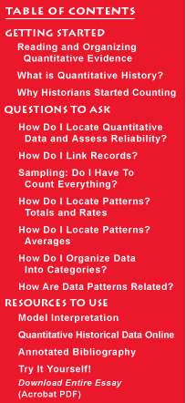
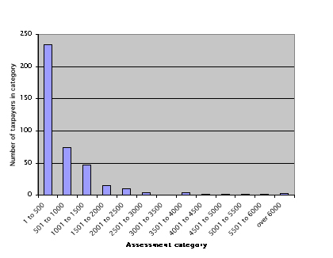
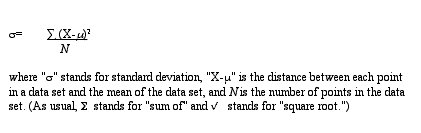
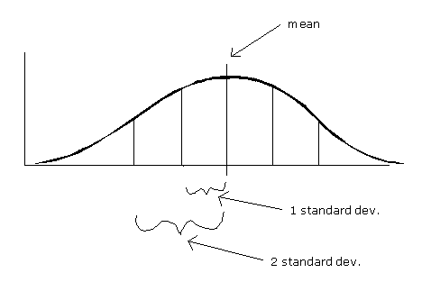

This is an archived copy of History Matters, provided by the Roy Rosenzweig Center for History and New Media. To explore this content in a new interface, visit Who Built America?.

|
 |
Staying
within the boundaries of grade-school mathematics, we now turn to averages.
Recall that you were taught that there are three kinds of averages:
1) the mean or, more technically, the arithmetic mean (the sum of the values divided by the number of cases—what we usually intend when we use the term "average" in everyday conversation); 2) the median (the midpoint in a range of values so that half of the values are higher and half are lower); and 3) the mode (the most often repeated value within a data set). All three kinds of averages are measures of what statisticians call "central tendency." That is, they represent an effort to identify the center or central number within a range of data, thereby summarizing what the data have in common.
Why the
median and not the mean or the mode? Each of these figures tells us
something about the average property holding of a Russia Township taxpayer
in 1850. Indeed, depending on what you intend by the term "typical,"
you could argue that the typical Russia Township taxpayer owned $260,
$389, or $667 in assessed property in 1850. It is important to specify
which measure you are using when you speak of the "average"
or "typical" member of a data set.  As Graph
3 makes clear, there was a large range of property assessments in Russia
Township in 1850. And just as averages summarize the central tendency
of a data set, other measures are useful for summarizing the dispersion
or variability of a data set. The simplest way to specify dispersion
is to give the minimum and maximum of the range, $13 and $7358 in the
case of Russia Township property assessments. But the minimum and maximum
by themselves do not tell us much about how tightly clustered or broadly
spread out the bulk of data points are; they just tell us where the
extremes lie at either end of the range.  If this
seems a bit confusing, don’t panic. For common sense purposes,
you may wish to conceptualize standard deviation in one of three ways.
The first is to think of it as a measure of the average of the distances
between each data point and the mean of the data set. The standard deviation
is not the mean of the distances of the data points from the
mean, but it is a kind of average.  Statisticians
have established that in all normal distributions approximately 68 percent
of the data will fall within one standard deviation on either side of
the mean, and approximately 95 percent of the data will fall within
two standard deviations on either side of the mean. That does not mean
all normal distributions are identical, however. The bell curve can
be flatter or steeper depending on the relative dispersion of the data.
If the data are spread out, then the curve will be flatter and the standard
deviation larger. If the data are tightly clustered around the mean,
then the curve will be sharper and the standard deviation smaller. But
the proportion of data within one standard deviation (68 percent) and
within two standard deviations (95 percent) remains the same across
all normal distributions. (Click
to see an example of what happens to a normal distribution curve when
you change the standard deviation. This link will take you to Berrie's
Statistics Page and requires Quicktime player.)
|
|||
|
|
||||